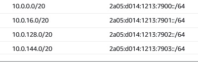

SCC
Brasil
os cloud gurus
Software Cloud Consulting
Your software development, cloud, consulting & shoring company
VPC - A introduction to IPv6

By Wolfgang Unger
Introduction
February 2024 AWS started to charge not only unused IP addresses but by now all public IP Adresses.
Together with the NAT costs, which have increased also a lot over the years, a VPC is now a considerable cost factor especially for small workloads.
The costs on IP addresses are also a way of AWS to push more the usage of IPv6.
Time to have a closer look on IPv6, because we are running out of IPv4 addresses and sooner o later we have to switch to IPv6.
Even so, the adaption is still not so advanced, this will change for sure real soon, we should get ready for IPv6. Take a look in this table on the support for IPv6 only:
IPv6 Support
As you can see the Dual Stack support option seems to be the better option for now.
VPC Basics
Lets first look on a IPv4 VPC.
As you might know, in IPv4 each computer or device has a IP address, which looks like this.
192.0.0.1 or 48.202.103.88
So 4 numbers from 0 to 255, each mumber is a octet (in binary 00000000 to 11111111).
Thus a IPv4 address is 32 bits long.
This gives us approximatly 4,3 billions of addresses.
This might sound like a huge number for you, but in the age of mobile phones & IOT devices all over the world it is not so huge anymore and comes to its limits.
There is also an important point on this to understand.
In IPv6 we often use private IP Addresses AND a internet proxy, a NAT or IGW for internet communication. This is neccesary since the IP addresses are so limited.
You have to differ between public and private IP addresses. The private IP Ranges are for example 10.0.0.0, 172.16.0.0 and 192.168.0.0 .
You can communicate in the internet to another server or device only by public IP.
In your Intranet our VPC you can communicate via private IP address.
Think of it like the public IP is a global unique address including country, city, postal code and street:
20 W 34th St., New York, NY 10001, USA (Empire State Building)
Inside the building you might have 3000 offices and an internal office building post office to deliver post from office 2020 to 1406.
You can send internal post with just the office number ( private IP), but if you want to recieve post from Europe the public IP (full building address) is required.
Instances or devices with such a private IP address communicate to other public IP addresses over the IP of a Proxy Server, the IGW or NAT ( therefore it means Network address translation).
This way many resources with a bunch of private IP addresses only are using and reserving one public IP address.
Now lets have a look on the structure of a IPv6 address:
2a05:d014:9be:9396:f365:96f6:8c78:c1ba
As you can see IPv6 uses hexadecimal instead of decimal numbers like in IPv4.
And is composed by 8 hexadecimal numbers instead of 4 decimal numbers ( 0-255)
The first 4 hexadecimal numbers are used for the network part, the last 4 for the node-part.
The IPv6 address space is organized by using format prefixes, that logically divide it in the form of a tree so that a route from one network to another can easily be found.
The main categories of IPv6 addresses are:
- Aggregatable global unicast addresses (GUA) — 2000::/3
- Unique-local unicast addresses (ULA) — FC00::/7
- Link-local unicast addresses — FE80::/10
- Multicast addresses — FF00::/8
A IPv6 address is 128 bit long.
So we won't not run out of IPv6 addresses really soon.
In IPv6 all public addresses are publicly routable, you don't need a NAT anymore
You don't need to differ between private and public IPs.
You can keep the model of private and public subnets to group different resource types like webservers public and
databases private, but private subnet would mean not public reachable ( Routes, Security Groups etc) and not private IP addresses.
If you want your instances can communicate to addresses outside your VPC, but are not public available from the internet,
you can use a Egress only IGW instead of a NAT.
NATs are no longer neccesary and therefor we can save costs with IPv6.
Also there are no charges on IPv6 addresses...at least not yet and hopefully not so soon.
Btw. If you want to ping a IPv6 address you need the ping6 command:
ping6 2a05:d014:9be:9396:f365:96f6:8c78:c1ba
For curl you can use this command:
curl -g -6 'http://[2a05:d014:1213:7900:476d:4f16:ffe0:ee16]:80/'
Setting up a VPC
If you want to set up a VPC in AWS you still will have to deal a little with IPv4, so it's a dual stack, not IPv6 only VPC.
Meaning this you have to define a IPv4 CIDR Range (for example 10.0.0.0/24) for your VPC (even so you will use/create only IPv6 addresses)
The IPv4 CIDR Range will be kind of insignificant.
VPC
Lets create a VPC with 2 public and 2 private subnets. So for a 10.0.0.0/16 VPC the CIDR Range for IPv6 will be /56 :
2a05:d014:1213:7900::/56

If you want to use the Web Console and the wizard on the VPC dashboard,
your settings should look like this:
After the creation you should see in the VPC Settings :
IPv6 pool = Amazon Associated and
IPv6 CIDR = 2a05:d014:1213:7900::/56
Subnets
The IPv6 subnets will have this CIDR Range:
Public:
2a05:d014:1213:7900::/64
2a05:d014:1213:7901::/64
Private:
2a05:d014:1213:7902::/64
2a05:d014:1213:7903::/64
(which is more or less 18 million trillion addresses for one subnet)

As you can see the subnets differ in the fourth number, to be precice in the hexadecimal pair (00 - FF) 2a05:d014:1213:7900::/64
Lets confim the settings for the subnets, important attributes are:
IPv6-only: No for Dual Stack Yes for IPv6 Only.
IPv6 CIDR: The CIDR Range for the subnet, will be /64
Auto-assign public IPv4 address: Can be No also for the public Subnet, because we will use IPv6 addresses instead of IPv4.
DNS64: should be Enabled
Resource name DNS AAAA record: should be Enabled
Routes
Our public subnets must have routes for local traffic and also to the IGW for traffic to the internet.
So it should look like this:
The private routes must have routes for local traffic and optionally - for internet traffic - routes to a Engress only IGW.
There is also a entry to a managed prefix list for the private subnets.
A managed prefix list is a set of one or more CIDR blocks. You can use prefix lists to make it easier to configure and
maintain your security groups and route tables.
If we take a closer look to this prefix list, it is com.amazonaws.region.s3, one of 8 aws managed prefix lists.
The entry for the S3 Prefix list was automatically added by the wizard, it got 10 entries to CIDR ranges and
seems to be neccesary for accessing S3 from our private IPv6 subnets.
I will have to make some tests on my self created IPv6 VPC, if accessing S3 is also possible without this prefix list.
Security Groups
For Security Groups you also must specifiy the IPv6 behaviour.
Allowing the internet communication in IPv4 is 0.0.0.0/0, meanwhile in IPv6 ::/0.
For internal VPC communication it will be the CIDR range of your VPC or subnets,
so for example
2a05:d014:1213:7900::/56
or for subnets
2a05:d014:1213:7902::/64
Security Group chaining wil not change, if you select another SG as source, this works the same way as in IPv4.
Infrastructure as Code
For our evaluation and for first POCs it's fine to create the resources on the Web-Console.
But for production workloads and therefore sooner or later we have to create them with IaC.
I have created a Github Repo with IaC Examples for IPv6 for CloudFormation, CDK and Terraform.
First examples are already available, but the repo is in work, keep that in mind.
Stay tuned !
The repo (under construction) is :
Github Wolfgang Unger - AWS IPv6
Conclusion
With the new costs on IP addresses and also the NAT costs on AWS, its time to have a closer look on IPv6
Even so the adaption is still not yet as far as it should be, we should get prepared to use IPv6 in the future.
Take a look at this table showing the support for AWS services.
IPv6 Support
Currently the Dual Stack option is the best one, IPv6 only is not yet an option.
But even with the Dual Stack option an Hybrid VPCs we can already save money and reduce our costs on NATs and public IPv4 addresses.
Take also a look into this blog for how to run EC2 instances with IPv6.
VPC IPv6 - Running EC2 instances
This blog for how to run Fargate with IPv6.
VPC IPv6 - Running Fargate
This is also an interesting blog from AWS Community Builder Eyal Estrin
Is the Public Cloud Ready for IPv6?
AWS Documentation
IPv6 on AWS
Migrate your VPC from IPv4 to IPv6
Autor

Wolfgang Unger
AWS Architect & Developer
6 x AWS Certified
1 x Azure Certified
A Cloud Guru Instructor
Certified Oracle JEE Architect
Certified Scrum Master
Certified Java Programmer
Passionate surfer & guitar player